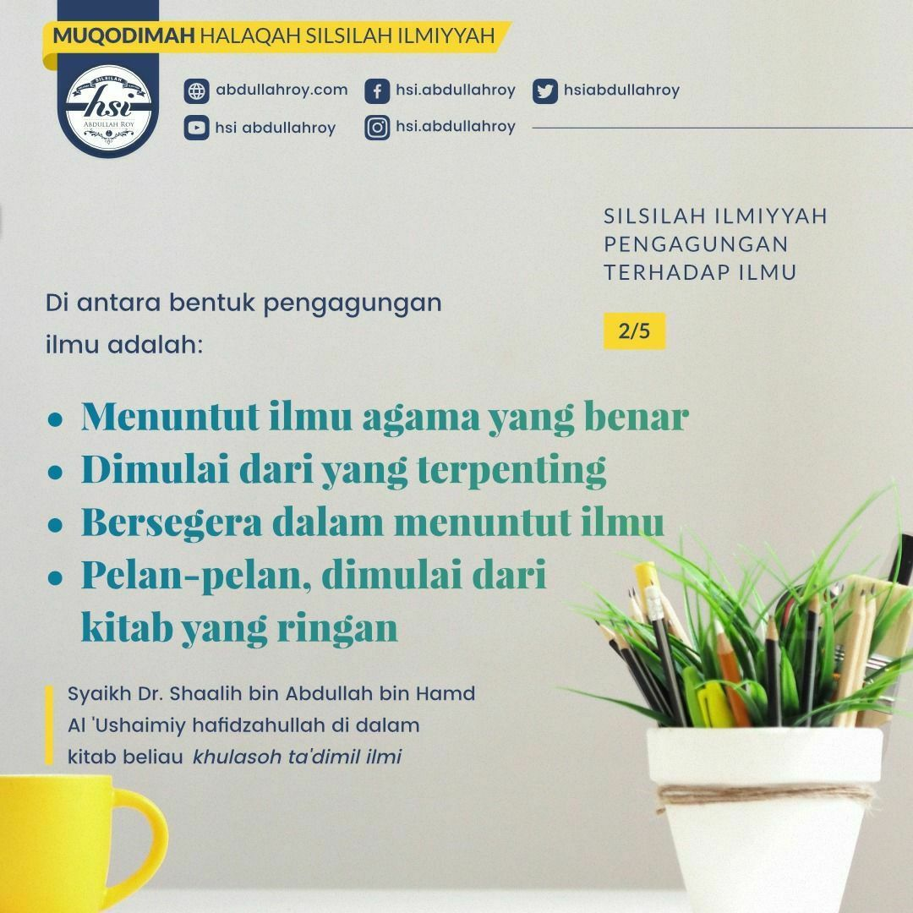

Muqodimah Halaqah Silsilah Ilmiyyah
Pengagungan
Terhadap
Ilmu
1.
Membersihkan
tempat ilmu
(yaitu hati)
2.
Mengikhlaskan
niat
3.
Mengumpulkan
tekad untuk
menuntutnya
4.
Memusatkan
semangat
5.
Menempuh
jalan
yang benar
6.
Mendahulukan
ilmu yang
paling penting
7.
Bersegera
untuk
mendapatkan
ilmu
8.
Pelan-pelan
didalam
menuntut
ilmu
9.
Sabar
dalam
menuntut
ilmu
10.
Memperhatikan
adab-adab
ilmu
11.
Menjaga ilmu
dari apa yang
menjelekkannya
12.
Memilih
teman
yang shaalih
13.
Berusaha keras
(menghafal, bermudzakarah, bertanya)
14.
Menghormati
ahli ilmu.
15.
Mengembalikan
sebuah
permasalahan
kepada
ahlinya
16.
Menghormati
majelis ilmu
dan kitab
17.
Membela ilmu
dan membelanya
18.
Berhati-hati
dalam bertanya
kepada para
ulama
19.
Cinta
yang sangat
kepada
ilmu
20.
Menjaga waktu didalam ilmu
x close
x close

x close
x close
x close